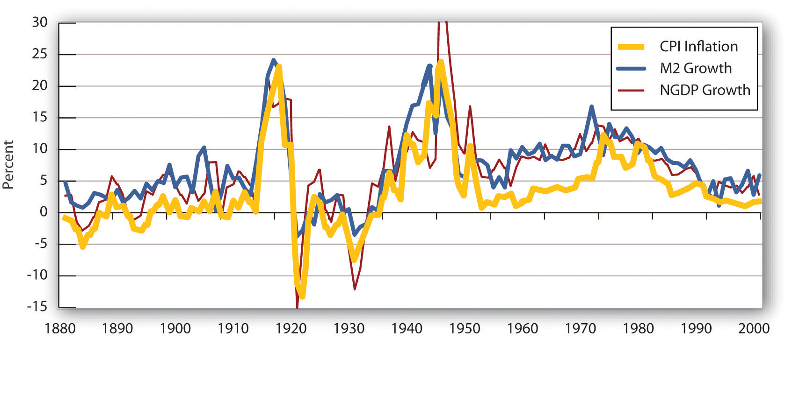
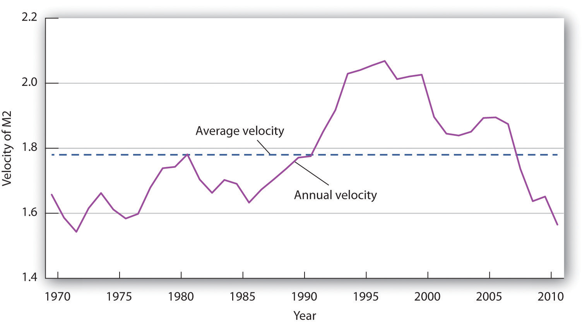

So far we have focused on how monetary policy affects real GDP and the price level in the short run. That is, we have examined how it can be used—however imprecisely—to close recessionary or inflationary gaps and to stabilize the price level. In this section, we will explore the relationship between money and the economy in the context of an equation that relates the money supply directly to nominal GDP. As we shall see, it also identifies circumstances in which changes in the price level are directly related to changes in the money supply.
We can relate the money supply to the aggregate economy by using the equation of exchange:
Equation 26.1
The equation of exchangeThe money supply (M) times its velocity (V) equals nominal GDP. shows that the money supply M times its velocity V equals nominal GDP. VelocityThe number of times the money supply is spent to obtain the goods and services that make up GDP during a particular time period. is the number of times the money supply is spent to obtain the goods and services that make up GDP during a particular time period.
To see that nominal GDP is the price level multiplied by real GDP, recall from an earlier chapter that the implicit price deflator P equals nominal GDP divided by real GDP:
Equation 26.2
Multiplying both sides by real GDP, we have
Equation 26.3
Letting Y equal real GDP, we can rewrite the equation of exchange as
Equation 26.4
We shall use the equation of exchange to see how it represents spending in a hypothetical economy that consists of 50 people, each of whom has a car. Each person has $10 in cash and no other money. The money supply of this economy is thus $500. Now suppose that the sole economic activity in this economy is car washing. Each person in the economy washes one other person’s car once a month, and the price of a car wash is $10. In one month, then, a total of 50 car washes are produced at a price of $10 each. During that month, the money supply is spent once.
Applying the equation of exchange to this economy, we have a money supply M of $500 and a velocity V of 1. Because the only good or service produced is car washing, we can measure real GDP as the number of car washes. Thus Y equals 50 car washes. The price level P is the price of a car wash: $10. The equation of exchange for a period of 1 month is
Now suppose that in the second month everyone washes someone else’s car again. Over the full two-month period, the money supply has been spent twice—the velocity over a period of two months is 2. The total output in the economy is $1,000—100 car washes have been produced over a two-month period at a price of $10 each. Inserting these values into the equation of exchange, we have
Suppose this process continues for one more month. For the three-month period, the money supply of $500 has been spent three times, for a velocity of 3. We have
The essential thing to note about the equation of exchange is that it always holds. That should come as no surprise. The left side, MV, gives the money supply times the number of times that money is spent on goods and services during a period. It thus measures total spending. The right side is nominal GDP. But that is a measure of total spending on goods and services as well. Nominal GDP is the value of all final goods and services produced during a particular period. Those goods and services are either sold or added to inventory. If they are sold, then they must be part of total spending. If they are added to inventory, then some firm must have either purchased them or paid for their production; they thus represent a portion of total spending. In effect, the equation of exchange says simply that total spending on goods and services, measured as MV, equals total spending on goods and services, measured as PY (or nominal GDP). The equation of exchange is thus an identity, a mathematical expression that is true by definition.
To apply the equation of exchange to a real economy, we need measures of each of the variables in it. Three of these variables are readily available. The Department of Commerce reports the price level (that is, the implicit price deflator) and real GDP. The Federal Reserve Board reports M2, a measure of the money supply. For the second quarter of 2008, the values of these variables at an annual rate were
M = $7,635.4 billion
P = 1.22
Y = 11,727.4 billion
To solve for the velocity of money, V, we divide both sides of Equation 26.4 by M:
Equation 26.5
Using the data for the second quarter of 2008 to compute velocity, we find that V then was equal to 1.87. A velocity of 1.87 means that the money supply was spent 1.87 times in the purchase of goods and services in the second quarter of 2008.
Assume for the moment that velocity is constant, expressed as . Our equation of exchange is now written as
Equation 26.6
A constant value for velocity would have two important implications:
In short, if velocity were constant, a course in macroeconomics would be quite simple. The quantity of money would determine nominal GDP; nothing else would matter.
Indeed, when we look at the behavior of economies over long periods of time, the prediction that the quantity of money determines nominal output holds rather well. Figure 26.6 "Inflation, M2 Growth, and GDP Growth" compares long-term averages in the growth rates of M2 and nominal GNP for 11 countries (Canada, Denmark, France, Italy, Japan, the Netherlands, Norway, Sweden, Switzerland, the United Kingdom, and the United States) for more than a century. These are the only countries that have consistent data for such a long period. The lines representing inflation, M2 growth, and nominal GDP growth do seem to move together most of the time, suggesting that velocity is constant when viewed over the long run.
Figure 26.6 Inflation, M2 Growth, and GDP Growth
The chart shows the behavior of price-level changes, the growth of M2, and the growth of nominal GDP for 11 countries using the average value of each variable. Viewed in this light, the relationship between money growth and nominal GDP seems quite strong.
Source: Alfred A. Haug and William G. Dewald, “Longer-Term Effects of Monetary Growth on Real and Nominal Variables, Major Industrial Countries, 1880–2001” (European Central Bank Working Paper Series No. 382, August 2004).
Moreover, price-level changes also follow the same pattern that changes in M2 and nominal GNP do. Why is this?
We can rewrite the equation of exchange, M = PY, in terms of percentage rates of change. When two products, such as M and PY, are equal, and the variables themselves are changing, then the sums of the percentage rates of change are approximately equal:
Equation 26.7
The Greek letter Δ (delta) means “change in.” Assume that velocity is constant in the long run, so that %ΔV = 0. We also assume that real GDP moves to its potential level, YP, in the long run. With these assumptions, we can rewrite Equation 26.7 as follows:
Equation 26.8
Subtracting %ΔYP from both sides of Equation 26.8, we have the following:
Equation 26.9
Equation 26.9 has enormously important implications for monetary policy. It tells us that, in the long run, the rate of inflation, %ΔP, equals the difference between the rate of money growth and the rate of increase in potential output, %ΔYP, given our assumption of constant velocity. Because potential output is likely to rise by at most a few percentage points per year, the rate of money growth will be close to the rate of inflation in the long run.
Several recent studies that looked at all the countries on which they could get data on inflation and money growth over long periods found a very high correlation between growth rates of the money supply and of the price level for countries with high inflation rates, but the relationship was much weaker for countries with inflation rates of less than 10%.For example, one study examined data on 81 countries using inflation rates averaged for the period 1980 to 1993 (John R. Moroney, “Money Growth, Output Growth, and Inflation: Estimation of a Modern Quantity Theory,” Southern Economic Journal 69, no. 2 [2002]: 398–413) while another examined data on 160 countries over the period 1969–1999 (Paul De Grauwe and Magdalena Polan, “Is Inflation Always and Everywhere a Monetary Phenomenon?” Scandinavian Journal of Economics 107, no. 2 [2005]: 239–59). These findings support the quantity theory of moneyIn the long run, the price level moves in proportion with changes in the money supply, at least for high-inflation countries., which holds that in the long run the price level moves in proportion with changes in the money supply, at least for high-inflation countries.
The stability of velocity in the long run underlies the close relationship we have seen between changes in the money supply and changes in the price level. But velocity is not stable in the short run; it varies significantly from one period to the next. Figure 26.7 "The Velocity of M2, 1970–2011" shows annual values of the velocity of M2 from 1960 to 2011. Velocity is quite variable, so other factors must affect economic activity. Any change in velocity implies a change in the demand for money. For analyzing the effects of monetary policy from one period to the next, we apply the framework that emphasizes the impact of changes in the money market on aggregate demand.
Figure 26.7 The Velocity of M2, 1970–2011
The annual velocity of M2 varied about an average of 1.78 between 1970 and 2011.
Source: Economic Report of the President, 2012, Tables B-1 and B-69.
The factors that cause velocity to fluctuate are those that influence the demand for money, such as the interest rate and expectations about bond prices and future price levels. We can gain some insight about the demand for money and its significance by rearranging terms in the equation of exchange so that we turn the equation of exchange into an equation for the demand for money. If we multiply both sides of Equation 26.1 by the reciprocal of velocity, 1/V, we have this equation for money demand:
Equation 26.10
The equation of exchange can thus be rewritten as an equation that expresses the demand for money as a percentage, given by 1/V, of nominal GDP. With a velocity of 1.87, for example, people wish to hold a quantity of money equal to 53.4% (1/1.87) of nominal GDP. Other things unchanged, an increase in money demand reduces velocity, and a decrease in money demand increases velocity.
If people wanted to hold a quantity of money equal to a larger percentage of nominal GDP, perhaps because interest rates were low, velocity would be a smaller number. Suppose, for example, that people held a quantity of money equal to 80% of nominal GDP. That would imply a velocity of 1.25. If people held a quantity of money equal to a smaller fraction of nominal GDP, perhaps owing to high interest rates, velocity would be a larger number. If people held a quantity of money equal to 25% of nominal GDP, for example, the velocity would be 4.
As another example, in the chapter on financial markets and the economy, we learned that money demand falls when people expect inflation to increase. In essence, they do not want to hold money that they believe will only lose value, so they turn it over faster, that is, velocity rises. Expectations of deflation lower the velocity of money, as people hold onto money because they expect it will rise in value.
In our first look at the equation of exchange, we noted some remarkable conclusions that would hold if velocity were constant: a given percentage change in the money supply M would produce an equal percentage change in nominal GDP, and no change in nominal GDP could occur without an equal percentage change in M. We have learned, however, that velocity varies in the short run. Thus, the conclusions that would apply if velocity were constant must be changed.
First, we do not expect a given percentage change in the money supply to produce an equal percentage change in nominal GDP. Suppose, for example, that the money supply increases by 10%. Interest rates drop, and the quantity of money demanded goes up. Velocity is likely to decline, though not by as large a percentage as the money supply increases. The result will be a reduction in the degree to which a given percentage increase in the money supply boosts nominal GDP.
Second, nominal GDP could change even when there is no change in the money supply. Suppose government purchases increase. Such an increase shifts the aggregate demand curve to the right, increasing real GDP and the price level. That effect would be impossible if velocity were constant. The fact that velocity varies, and varies positively with the interest rate, suggests that an increase in government purchases could boost aggregate demand and nominal GDP. To finance increased spending, the government borrows money by selling bonds. An increased supply of bonds lowers their price, and that means higher interest rates. The higher interest rates produce the increase in velocity that must occur if increased government purchases are to boost the price level and real GDP.
Just as we cannot assume that velocity is constant when we look at macroeconomic behavior period to period, neither can we assume that output is at potential. With both V and Y in the equation of exchange variable, in the short run, the impact of a change in the money supply on the price level depends on the degree to which velocity and real GDP change.
In the short run, it is not reasonable to assume that velocity and output are constants. Using the model in which interest rates and other factors affect the quantity of money demanded seems more fruitful for understanding the impact of monetary policy on economic activity in that period. However, the empirical evidence on the long-run relationship between changes in money supply and changes in the price level that we presented earlier gives us reason to pause. As Federal Reserve Governor from 1996 to 2002 Laurence H. Meyer put it: “I believe monitoring money growth has value, even for central banks that follow a disciplined strategy of adjusting their policy rate to ongoing economic developments. The value may be particularly important at the extremes: during periods of very high inflation, as in the late 1970s and early 1980s in the United States … and in deflationary episodes.”Laurence H. Meyer, “Does Money Matter?” Federal Reserve Bank of St. Louis Review 83, no. 5 (September/October 2001): 1–15.
It would be a mistake to allow short-term fluctuations in velocity and output to lead policy makers to completely ignore the relationship between money and price level changes in the long run.
The Case in Point on velocity in the Confederacy during the Civil War shows that, assuming real GDP in the South was constant, velocity rose. What happened to money demand? Why did it change?
The Union and the Confederacy financed their respective efforts during the Civil War largely through the issue of paper money. The Union roughly doubled its money supply through this process, and the Confederacy printed enough “Confederates” to increase the money supply in the South 20-fold from 1861 to 1865. That huge increase in the money supply boosted the price level in the Confederacy dramatically. It rose from an index of 100 in 1861 to 9,200 in 1865.
Estimates of real GDP in the South during the Civil War are unavailable, but it could hardly have increased very much. Although production undoubtedly rose early in the period, the South lost considerable capital and an appalling number of men killed in battle. Let us suppose that real GDP over the entire period remained constant. For the price level to rise 92-fold with a 20-fold increase in the money supply, there must have been a 4.6-fold increase in velocity. People in the South must have reduced their demand for Confederates.
An account of an exchange for eggs in 1864 from the diary of Mary Chestnut illustrates how eager people in the South were to part with their Confederate money. It also suggests that other commodities had assumed much greater relative value:
“She asked me 20 dollars for five dozen eggs and then said she would take it in “Confederate.” Then I would have given her 100 dollars as easily. But if she had taken my offer of yarn! I haggle in yarn for the millionth part of a thread! … When they ask for Confederate money, I never stop to chafer [bargain or argue]. I give them 20 or 50 dollars cheerfully for anything.”
Sources: C. Vann Woodward, ed., Mary Chestnut’s Civil War (New Haven, CT: Yale University Press, 1981), 749. Money and price data from E. M. Lerner, “Money, Prices, and Wages in the Confederacy, 1861–1865,” Journal of Political Economy 63 (February 1955): 20–40.
People in the South must have reduced their demand for money. The fall in money demand was probably due to the expectation that the price level would continue to rise. In periods of high inflation, people try to get rid of money quickly because it loses value rapidly.